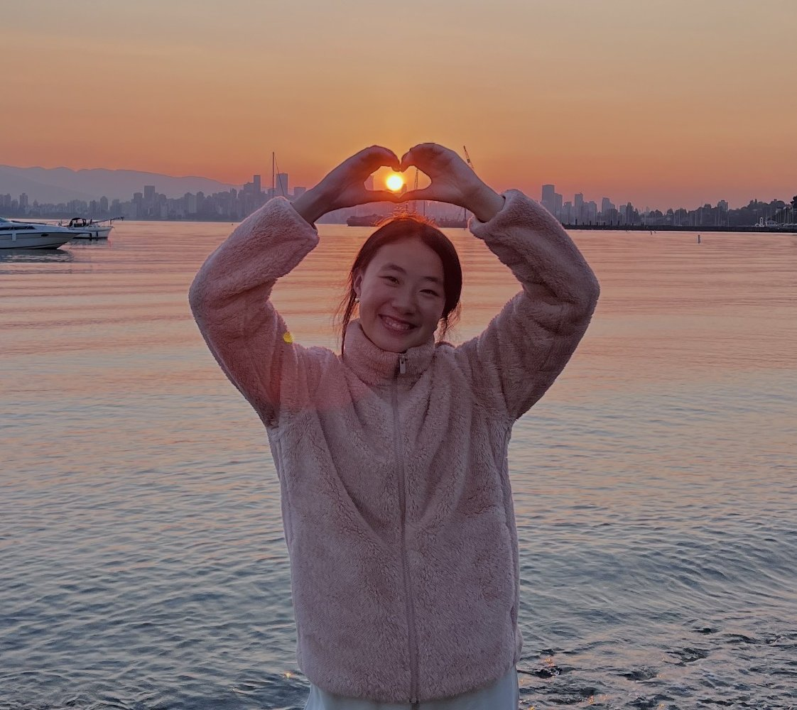

Hi! I'm Diane. Welcome to my portfolio!
Inspired by my nickname and my love for sunsets and warm colours, this portfolio shows who I am and what I've been working on. Take a look around! I hope you find something you connect with.
Why the dots?
In Chinese culture, a lot of us have a nickname that only close family and friends call us. Mine is 点点 (Diǎndiǎn). Notice anything? It looks a lot like my English name, Diane. Yes, my parents added an e and called it a day.
One meaning of 点 is "dot," so 点点 literally translates to "dot dot" (··). The two sunsets on this page are photos I took at home in Vancouver, redrawn as tens of thousands of tiny dots of colour. Move your cursor across the water and watch them light up!
点点 also means "little by little," which is pretty much how I try to approach everything in life. In a world that moves fast, I want to remind you to slow down and take things one step at a time. Big problems feel a lot less scary when you break them into small pieces.
One dot on its own isn't much, but put enough of them together and you get something beautiful to step back and look at.